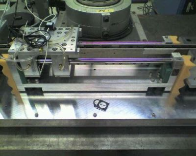

Control of High-Performance Wafer Scanning Systems
Overview
Photolithography is a critical step in the manufacture of integrated circuits (ICs). In the process of photolithography, a pattern is transferred from a photomask (reticle) to a chemical photoresist coating a silicon wafer by shining a light source through the pattern. The pattern is later engraved into the resist through chemical etching. This process is repeated to create the circuit layer by layer.
In order to achieve small feature sizes for ICs, it is important to have high precision control of the wafer stage. This research focuses on improving the mechanical performance of the wafer stage through developing innovative control strategies, modeling methods, and metrology solutions.
Experimental Setup
A single-axis wafer scanner setup is available at our lab for experiments. The system consists of a stage and counter mass, both driven by linear permanent magnet motors (LPMM). The stage is mounted on air-bearings, resulting in extremely low friction. The system is equipped with sensors such as encoder, accelerometers, and a laser interferometry system.

The system is controlled by a combination of LabVIEW Real-Time and FPGA. The FPGA interfaces with the stage actuators and measurement systems and provides accurate timing for Real-Time control. The Real-Time system runs the stage control algorithms and data logging operations. The LabVIEW development environment enables users to quickly design, implement and analyze control strategies.
Research Topics
Input Shaping
Small positioning errors, suppression of vibration, and small settling times are some performance requirements for the wafer stage. This research investigates the use of input shaping techniques to reduce residual vibration while preserving fast settling time. Methods such as low-pass filtering, jerk-limited profiles, and input shaping will be applied. Mixed time-frequency constrained optimization techniques will be used to generate trajectories with minimum settling time, and limited frequency bandwidth to prevent residual vibrations.
Force Ripple Compensation
Linear permanent magnet motors have found widespread application in precision positioning. However, the force ripples which are caused by irregular magnetic field and varience of winding self-inductance between the premanent magnets and the translator can cause significant tracking errors. A composite controller is proposed which consists of PID feedback controller and an adaptive feedforward compensator.
Iterative Learning Control
Considering the repetitive nature of scanning, ILC has been used extensively for improving trajectory tracking and repetitive disturbance rejection in wafer scanners. ILC uses information from previous trials of a process to reject periodic disturbances iteratively. We implemented a simple P-type ILC algorithm for wafer stage control. It is especially attractive because of its simple design and implementation.
Automatic Tuning Techniques
Every wafer stage has slightly different plant and disturbance model characteristics, necessitating fine-tuning of controllers for each wafer stage. One of our research aims is to develop techniques to automate the iterative process of controller tuning. Iterative Feedback Tuning (IFT) is being investigated as a method for tuning. The automation of controller tuning will simplify the installation of new machines in the future.
Two-axis Synchronization
In modern wafer scanner setups, both the wafer and reticle are scanned in opposite directions to increase the scanning resolution. The movement of the wafer and reticle stages must be synchronized to avoid alignment errors. Areas of investigation include modeling the cross-coupling between the stages, synchronization, and MIMO control.
Researchers
Chen, Xu |
|